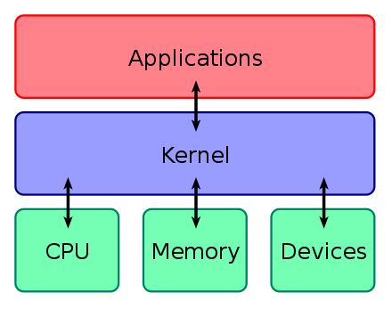
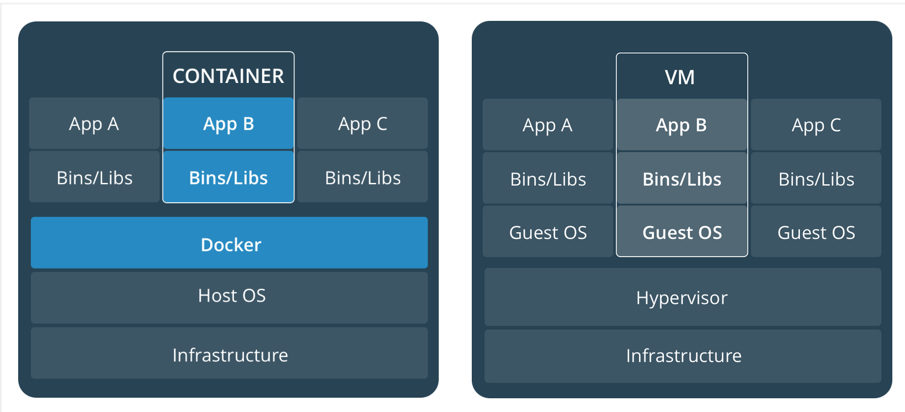
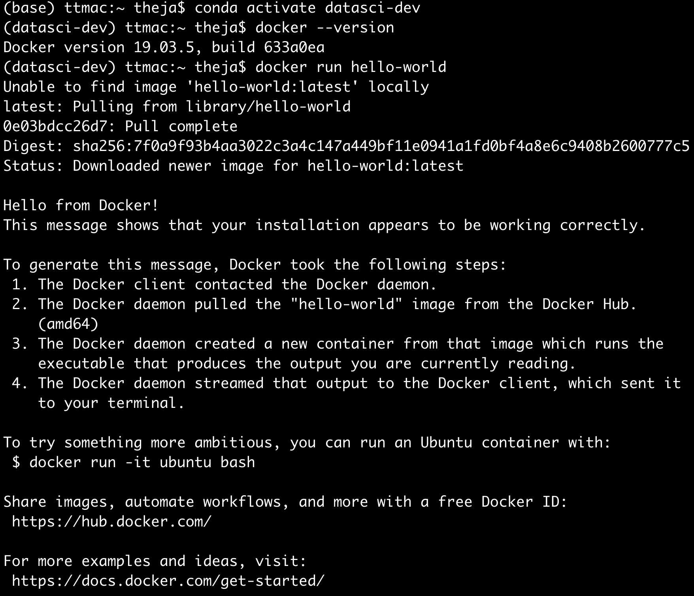

Docker
We will first get learn a bit more about docker. From their website:
Docker is an open platform (written in Go) for developing, shipping, and running applications.
Docker enables you to separate your applications from your infrastructure so you can deliver software quickly.
With Docker, you can manage your infrastructure in the same ways you manage your applications.
By taking advantage of Docker’s methodologies for shipping, testing, and deploying code quickly, you can significantly reduce the delay between writing code and running it in production.
Docker Overview
- A loosely isolated environment (a container) can be created using Docker.
- We can run multiple containers ona host (like our operating system: Mac/Win/Linux)
- Containers are light on resources compared to VMs because they run directly with the host machine’s kernel.
- Example, you may have heard of the linux OS kernel.
- A kernel is a computer program at the core of a computer’s operating system with complete control over everything in the system

Docker Engine
Is an app that is comprised of
- a server (
dockerd) that handles creating containers - an API to talk to the server
a CLI (
docker) that uses the APIThe client and the daemon they interact via the API to handle creation and deployment of containers.
- a server (

Docker Architecture

- Docker registry: stores Docker images. E.g., Docker hub is a public registry.
- Docker objects:
- Images
- Networks
- Containers
- Volumnes
- Plugins
Image:
- Read only template of instructions to create a container.
- It is often based on other images.
Dockerfilecreates images: slightly changing it does not mean rebuilding from scratch (lightweight)
When we run the following command:
$ docker run -i -t ubuntu /bin/bash- Docker pulls the image from the registry
- Creates a container
- Allocates a private filesystem
- Creates a network inteface
- Executes
/bin/bashbecause of the-i -tflag
Services: Docker (> 1.12) has the capability to make multiple daemons work together (as a swarm) with load balancing automatically handled.
Container:
- A runnable instance of an image
- Several operations: create, start, stop, move, delete.
- When deleted, it does NOT store state!
- In contrast, a VM is a guest operating system that accesses host resources through a hypervisor.

Running a Container
Download Docker for Desktop from here. You will have to create a free account with them.
Check version
docker --versionRun a hello world container:
docker run hello-world

In the above, I changed to the appropriate conda env, although it is not necessary to do so. Its just a good practice.
We can check the list of images we have locally via:
(datasci-dev) ttmac:~ theja$ docker image ls REPOSITORY TAG IMAGE ID CREATED SIZE hello-world latest bf756fb1ae65 8 months ago 13.3kBWe can check the active/recently run containers via the following command:
(datasci-dev) ttmac:~ theja$ docker ps --all CONTAINER ID IMAGE COMMAND CREATED STATUS PORTS NAMES 76cf92eaec76 hello-world "/hello" 4 minutes ago Exited (0) 4 minutes ago great_sinoussicreate a folder and copy the flask weather service app (
weather.py) from before.(datasci-dev) ttmac:code theja$ mkdir docker-weather-service (datasci-dev) ttmac:code theja$ cd docker-weather-service/ (datasci-dev) ttmac:code theja$ cp ../lecture1/weather.py docker-weather-service/Recall that running
python weather.pyand accessing it from the browser using the urlhttp://localhost:5000/?msg=Chicagoshould give you a JSON response back.We will write a
Dockerfileas below to build a custom image.FROM debian:buster-slim MAINTAINER Your Name RUN apt-get update \ && apt-get install -y python3-pip python3-dev \ && cd /usr/local/bin \ && ln -s /usr/bin/python3 python \ && pip3 install flask geopy requests COPY weather.py weather.py ENTRYPOINT ["python3","weather.py"]Building the custom image is achieved by the following commands:
docker image build -t "weather_service" . docker images #to check the recently built imageYou should see the following output (truncated, only showing the last)
Step 4/5 : COPY weather.py weather.py ---> 6ad721a3d5ef Step 5/5 : ENTRYPOINT ["python3","weather.py"] ---> Running in 70347eb72094 Removing intermediate container 70347eb72094 ---> ffd1e8b9172f Successfully built ffd1e8b9172f Successfully tagged weather_service:latest (datasci-dev) ttmac:docker-weather-service theja$ docker images REPOSITORY TAG IMAGE ID CREATED SIZE weather_service latest ffd1e8b9172f 9 seconds ago 492MB debian buster-slim c7346dd7f20e 4 weeks ago 69.2MB hello-world latest bf756fb1ae65 8 months ago 13.3kBWe will run the newly created
weather_serviceimage as a container locally suing thedocker runcommand (recall how we did the hello world example).docker run -d -p 5000:5000 weather_service docker psHere, the
-d -pflags are to make the container run as a daemon (i.e., not interactive with the user) and to do port forwarding.(datasci-dev) ttmac:docker-weather-service theja$ docker run -d -p 5000:5000 weather_service 50dbba727a24c9534f0a88165a0601f9447ec5e2e3a6c21fe8443c12cfac63e4 (datasci-dev) ttmac:docker-weather-service theja$ docker ps -all CONTAINER ID IMAGE COMMAND CREATED STATUS PORTS NAMES 50dbba727a24 weather_service "python3 weather.py" 4 seconds ago Up 3 seconds 0.0.0.0:5000->5000/tcp tender_shternGoing to your browser and accessing
http://localhost:5000/?msg=Chicagoshould give the appropriate weather response JSON object.The model serving python files (both pytorch and surprise based) can be deployed locally or on a VPS (EC2/Vultr/Digitalocean) similarly.
Since hosting a container does not by itself give us additional features such as fault tolerance and scalability (being able to respond to many requests simultaneously), we will make use of ECS and GKE to address thee.